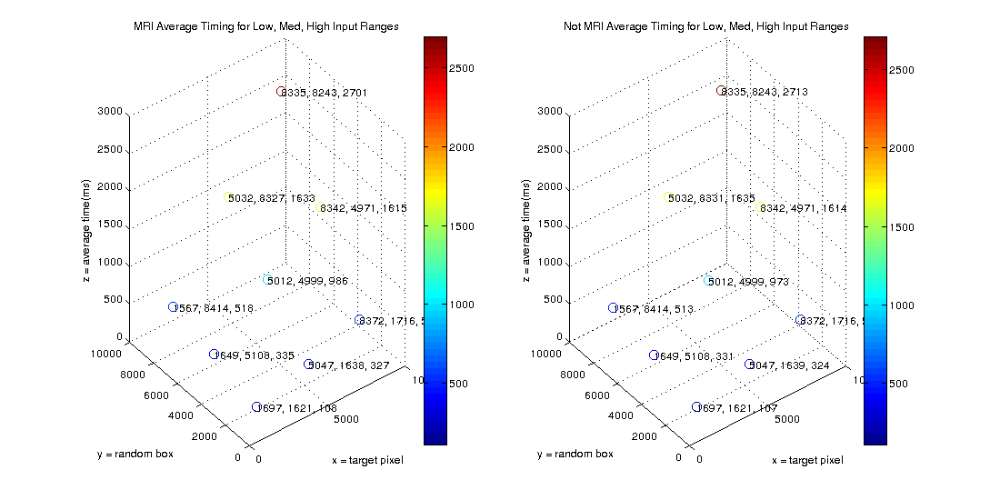

Contents
script analyzing output data
i1 = untitled(:,15) == 1;
i2 = untitled(:,15) == 0;
data{1} = untitled(i1,:);
data{2} = untitled(i2,:);
mri = 1;
no_mri = 2;
type{1} = 'MRI';
type{2} = 'Not MRI';
set(figure, 'Position', [0, 0, 1100, 550]);
scatter plot
for i = 1:2
subplot(1,2,i);
scatter3(data{i}(:,13),data{i}(:,14),data{i}(:,16),30,data{i}(:,16));
colorbar;
title([type{i},' Timing']);
xlabel 'x = target pixel';
ylabel 'y = random box';
zlabel 'z = time(ms)';
end
histogram plot
for i = 1:2
subplot(1,2,i);
hist(data{i}(:,16),50);
title([type{i}, ' histogram']);
ylabel 'count';
xlabel 'time(ms)';
if i == 1
avg_mri = mean(data{i}(:,16))
else
avg_not_mri = mean(data{i}(:,16))
end
end
avg_mri =
812.5000
avg_not_mri =
865.9980
Sector Averages
threshTargetNum(1) = 3333;
threshTargetNum(2) = 6666;
threshRandomBoxNum(1) = 3333;
threshRandomBoxNum(2) = 6666;
targetSectorIndex = {};
randomBoxSectorIndex = {};
for i = 1:2
for j = 1:3
thresh = 0;
if j == 1
targetSectorIndex{i}{j} = data{i}(:,13) < threshTargetNum(1);
randomBoxSectorIndex{i}{j} = data{i}(:,14) < threshRandomBoxNum(1);
elseif j == 2
targetSectorIndex{i}{j} = (data{i}(:,13) >= threshTargetNum(1))&(data{i}(:,13) <= threshTargetNum(2));
randomBoxSectorIndex{i}{j} = (data{i}(:,14) >= threshRandomBoxNum(1))&(data{i}(:,14) <= threshRandomBoxNum(2));
else
targetSectorIndex{i}{j} = data{i}(:,13) > threshTargetNum(2);
randomBoxSectorIndex{i}{j} = data{i}(:,14) > threshRandomBoxNum(2);
end
end
avgResult = [];
avgResultX = [];
avgResultY = [];
for j = 1:3
for k = 1:3
combinedIndex = targetSectorIndex{i}{j} & randomBoxSectorIndex{i}{k};
combined = data{i}(combinedIndex,:);
avgResult(end+1) = mean(combined(:,16));
avgResultX(end+1) = mean(combined(:,13));
avgResultY(end+1) = mean(combined(:,14));
end
end
subplot(1,2,i);
scatter3(avgResultX,avgResultY,avgResult,80,avgResult);
colorbar;
for j = 1:9
str = [num2str(round(avgResultX(j))),', ',num2str(round(avgResultY(j))),', ',num2str(round(avgResult(j)))];
text(avgResultX(j), avgResultY(j), avgResult(j), str);
end
title([type{i},' Average Timing for Low, Med, High Input Ranges']);
xlabel 'x = target pixel';
ylabel 'y = random box';
zlabel 'z = average time(ms)';
end
